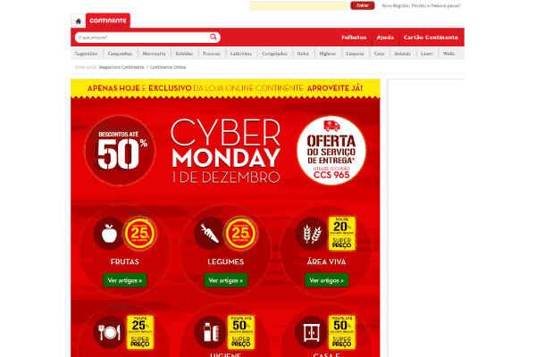
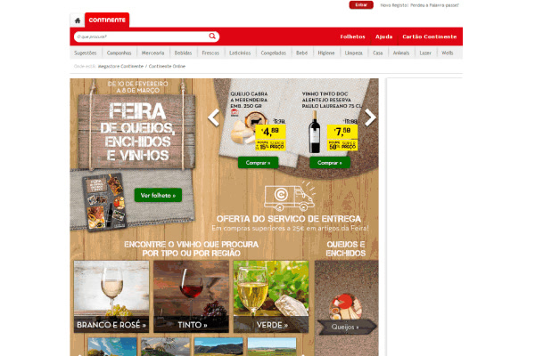
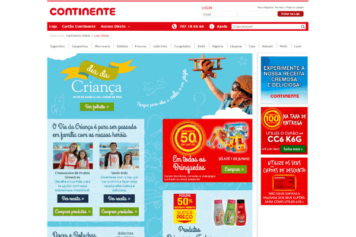
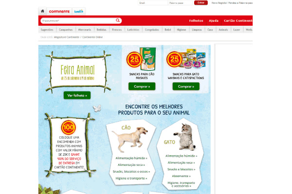

Work / Project note
Continente Online
Growing an online supermarket in a country that barely shopped for groceries online, one tested change at a time.
- Company
- Continente Online, Sonae MC
- When
- 2012–2016
- My role
- Marketing designer and consultant
- Scale
- 200+ campaigns in 50+ categories
- Product
- B2C e-commerce, online grocery
In short
The problem
In 2012 only 0.9% of Portuguese grocery shopping happened online. Continente.pt converted 1.2% of visits, and 75% of carts were abandoned at checkout.
What I did
Customer research, A/B tests and analysis with the marketing and e-commerce teams; more than 200 campaign pages; and work on a major redesign of the site.
The outcome
13% more sales after the redesign
Checkout completion from 25% to 30%, and 28% better 90-day retention for new customers.
What we testedProblem, evidence, change, result
| Problem | Evidence | Change | Result |
|---|---|---|---|
| 75% of carts abandoned at checkout | A/B tests: long forms, unclear substitutions | A 5-step checkout with autofill and a visual substitution preview | Completion 25% → 30%; 22% fewer substitution tickets |
| Only 15% of new customers bought again | Cohorts: pantry-staple buyers came back 3× as often | "Pantry Starter" suggestions after the first order | +28% 90-day retention; +19% lifetime value |
| Seasonal banners at 12% click-through | Eye-tracking: 83% of users looked at search and navigation instead | Promotions moved into those zones | +47% click-through; €1M monthly sales from promotions |
| Returning customers couldn't find past items | Benchmark of "buy again" features | Buy Again with quick add | +24% repeat purchases; +13% monthly revenue |
| Sign-ups falling despite more spend | Interviews: registration too long, value unclear | Social login; the discount up front | 200K new registrations, to 700K |
| Satisfaction flat | Surveys across the site | Richer product pages, faster checkout, comparison | +0.9 points in CSAT |
Figures as recorded at the time; percentages are relative changes unless stated.
Campaign designA supermarket's pace
Behind the tests ran a constant stream of campaigns, each with its artwork and landing page, often on tight seasonal deadlines. One grid and one red frame, with each event's own character inside it.




Reflection. Watch behaviour before you redesign. Eye-tracking showed people ignored banners and used search; the fix was moving offers into their path, not making banners louder.
Want the longer version? oliveira.anibal@gmail.com